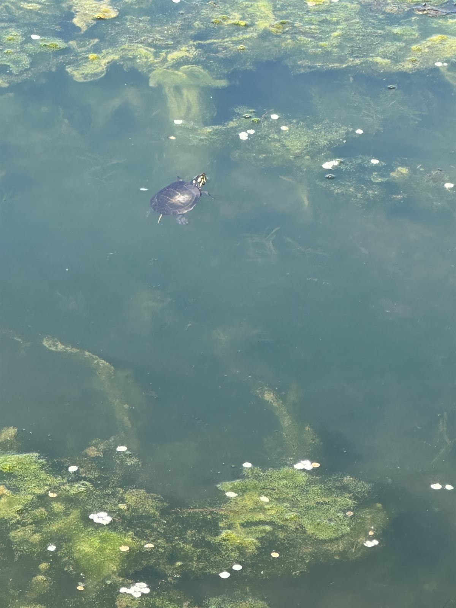
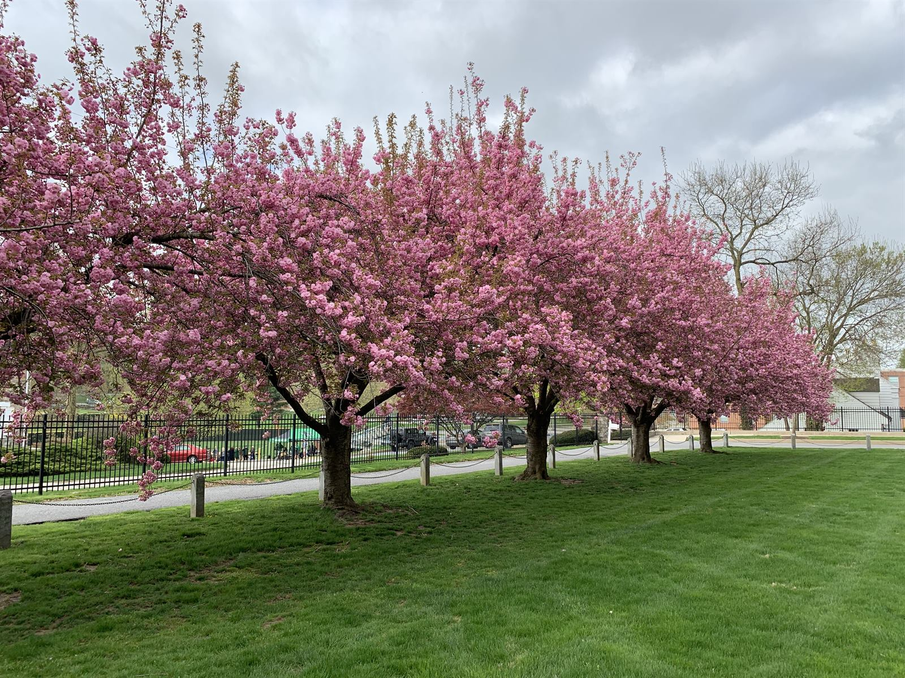

Build it back better. Pond and wetland restoration, pollinator habitat establishment, and soil restoration across Central Pennsylvania. The opposite of the kill-it-and-move-on approach — we focus on creating living ecosystems that take care of themselves over time.
PA Licensed Pesticide Applicator Since 20058 License CategoriesPA Certified NWCOWorking BeekeeperFully InsuredFree Consultations — No Contracts
Restoration vs. Maintenance — Different Goals, Different Work
Most property care is in the maintenance-and-control business: kill the weeds, kill the bugs, kill the algae, clear the lawn. That works to keep a property tidy. But it doesn't build anything back. Restoration work puts real ecological function back on your property — a pond that supports fish and frogs, a meadow strip that supports pollinators, a lawn rooted in living soil instead of bagged fertilizer. Healthier systems need less intervention over time. That's the whole point.
Three Restoration Programs
Pond & Wetland Restoration
For pond owners who want a living ecosystem instead of a sterile clear-water feature. We design plans that allow controlled algae growth (typically 10–20% surface coverage) and treat bottom muck with beneficial bacteria to restore the natural decomposition cycle. The result: enough plant life and biological activity to support fish, frogs, turtles, dragonflies, and aquatic insects — without runaway weeds. More on aquatic services →
Pollinator Habitat Establishment
For unused space — fence lines, orchard edges, field margins, side yards — we help you establish native flowering pollinator strips and meadows that bloom across the season. Species selection specific to Central PA conditions: native milkweed for monarchs, mountain mint and goldenrod for native bees, coneflower and bee balm for visual appeal. More on pollinator restoration →
Soil Health & Lawn Restoration
For builder-grade hydroseed that's failing, compacted estate lots, or lawns that never recovered from grub or drought damage. We rebuild the soil itself instead of just feeding the failing turf — Penn State soil testing, core aeration in the first weeks of September, organic matter amendments, overseeding with the right grass blend for your light and soil. Inside two seasons most properties look like a different lawn. More on lawn care →
Who This Is For
Property owners with stressed ponds — algae blooms every summer, muck accumulating on the bottom, fewer fish or frogs than there used to be.
Anyone who's lost pollinator activity — fewer monarchs, fewer bumble bees, no fireflies. Habitat restoration is the only thing that brings them back.
New-construction homeowners with builder hydroseed that died in year 2 or 3 — the soil is the problem, not the seed.
Anyone restoring a property after years of "kill everything" maintenance by a previous owner or company.
Estate owners with the space and patience for multi-year ecological work — restoration is not a one-application service.

A restored pond near Enola — wildlife returns when the ecosystem is rebuilt instead of sterilized.

Flowering trees and native plantings are the backbone of a working pollinator habitat.
How Restoration Work Actually Goes
This isn't a single visit. Most restoration projects unfold over 2–3 years:
Year 1: Assessment + baseline interventions. Soil tests, water quality where applicable, what's already growing, where the problems are. First-year work is the biggest lift — aeration and topsoil amendment for soil, beneficial bacteria seeding for ponds, initial pollinator plantings, mechanical removal of invasive species.
Year 2: Build on what's working. Overseed thin spots, reinforce successful pollinator plantings, refine pond bacterial program based on year-one results, manage what didn't take.
Year 3+: Light-touch maintenance. By year 3 most restored ecosystems run themselves. We move from heavy intervention to monitoring and small corrections.
We'll set realistic timelines up front and tell you honestly when a property needs more time than you're willing to commit to.
Frequently Asked Questions
How is this different from your lawn care, pollinator, and aquatic service pages?
Those pages cover the specific treatments and the maintenance versions of each service. This page is the framework for properties pursuing real ecological restoration across multiple areas — pond, habitat, soil — as a coordinated multi-year project. If you just want pond algae treated this season, that's aquatic service. If you want a pond brought back to a living ecosystem over 2–3 years, that's restoration.
How much does restoration work cost?
Highly project-dependent. Pond restoration: typically $1,200–$3,500 in year one depending on pond size and starting condition. Pollinator habitat establishment: $400–$2,000 depending on area planted. Soil and lawn restoration: $500–$2,500 in year one. Year 2 and Year 3 costs drop significantly once the system stabilizes. We quote each project specifically after a site walk.
Do I have to commit to multiple years?
No formal contract — we don't do contracts on any service. But we'll tell you up front if a project genuinely needs multi-year work to succeed, and we'll suggest pausing if it's not the right time for your budget or property.
Can you restore a property using only organic products?
Often yes — restoration work leans heavily on organic and mechanical approaches anyway. For soil we use compost, organic granular fertilizers, and beneficial soil biology. For pollinator habitat, no synthetics once established. For ponds, beneficial bacteria are natural; herbicide use is minimal and reserved for invasive species when nothing else works.
Will it look messy during restoration?
Sometimes briefly. Restoration involves letting some natural processes back in — controlled algae growth in a pond, a meadow strip that looks "weedy" for the first season before it fills in and blooms, soil amendments that take time to visibly transform a lawn. We'll show you what each stage looks like up front so there are no surprises. If your goal is a manicured estate appearance, traditional lawn care and pond management is the better fit.
Service Area
We serve Dauphin, Cumberland, Lebanon, Perry, York, and Lancaster Counties — including Harrisburg, Hershey, Camp Hill, Mechanicsburg, Carlisle, Lebanon, Hummelstown, Palmyra, Elizabethtown, Enola, Dillsburg, and surrounding Central PA communities. Restoration work is best suited to larger properties with multiple ecosystem areas — estate lots, hobby farms, rural acreage, and ag properties.
Free Restoration Consultation
Locally owned. PA-licensed applicator since 2005. Working beekeeper. Free site walk and honest assessment — we'll tell you what's realistic, what isn't, and what it'll cost. Serving all of Central Pennsylvania.